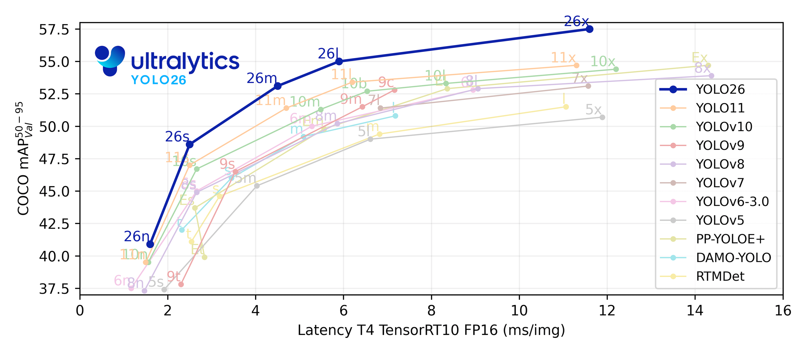

Experimenting with object counting with Machine Learning and Computer vision using Ultralytics Yolo Models. This has always been a project I have wanted to embark on and here I will show how it is done. The steps are simple. If you to opt to rather read the documentation, follow the Ultralytics website
How to get started
[!NOTE] This implementation is done using Python
Firstly, if you have not installed python, install it on the Python website
Install the Ultralytics package > pip install -U ultralytics
Ultralytic’s Yolo models training and validation models use a .yaml file. The yaml file has the directory of the training, validation and test data separated into folders. This was all automatically done using a popular open source library label-studio. Follow this Youtube video for a deeper step-by-step guide into using label-studio. For data collection, I used bing_image_downloader to download images from bing. You decide the sources you gain your data
What not to do
When following the Youtube tutorial, I began seeing that label-studio has changed and simply exporting the labelled data in Yolo and not choosing the Yolo (with images) options, the results varied drastically. Be sure to select the Yolo (with Images) export option for reproducible results with the Youtube tutorial.
Next steps
To split the dataset into train, validate and test, run this code in you code editor
import shutil
import random
def split_dataset(src_images, src_labels, dst, splits=(0.7, 0.2, 0.1), seed=42):
random.seed(seed)
images = [p for p in Path(src_images).glob("*")
if p.suffix.lower() in [".jpg", ".jpeg", ".png"]]
random.shuffle(images)
n = len(images)
train_end = int(n * splits[0])
val_end = train_end + int(n * splits[1])
sets = {
"train": images[:train_end],
"val": images[train_end:val_end],
"test": images[val_end:]
}
for split, files in sets.items():
(Path(dst) / "images" / split).mkdir(parents=True, exist_ok=True)
(Path(dst) / "labels" / split).mkdir(parents=True, exist_ok=True)
for img in files:
shutil.copy(img, Path(dst) / "images" / split / img.name)
lbl = Path(src_labels) / img.with_suffix(".txt").name
if lbl.exists():
shutil.copy(lbl, Path(dst) / "labels" / split / lbl.name)
print(f"{split}: {len(files)} images")When running the function about the parameters * src_images is the file destination where the exported Yolo data is named images * src_labels is the folder destination in the exported Yolo data named labels * dst is the folder name where all of the split data will be stored
If you use bing_image_downloader to get data images, you might download .webp images. If that is the case, include that file name extension among the other image file extensions.
Create .yaml file
To create the .yaml file that will be used to train the model, run this code
import yaml
def create_yaml(dataset_path, classes_txt):
with open(classes_txt) as f:
class_names = [line.strip() for line in f if line.strip()]
data = {
"path": str(Path(dataset_path).resolve()),
"train": "images/train",
"val": "images/val",
"test": "images/test",
"nc": len(class_names),
"names": class_names
}
yaml_path = Path(dataset_path) / "data.yaml"
with open(yaml_path, "w") as f:
yaml.dump(data, f, default_flow_style=False, sort_keys=False)
print(f"Created data.yaml with {len(class_names)} classes: {class_names}")
create_yaml("dataset_t/", "data/classes.txt")Training the model
To train the model is simple from here, just copy and paste this block of code:
model = YOLO('yolo11n.pt')
results = model.train(data='location/for/data.yaml', epochs=100, imgsz=640)Ultralytics has a large catalogue of models to choose from, each with varying perfomance (comparison image below).

Source: UltralyticsI chose yolo11n.pt because it was a lightweight version and used a lot in their example code. Running the code above will download the yolo11n model as well as the yolo26n model into your system.
Quick breakdown of the code above: * data= is where the data.yaml file is stored. Yours may not even be named data, but the location for the .yaml file created with the previoius code block * epochs for the number of times you wish for the model to go through your data * imgsz means the image size. The default size from the documentation is 640. This is an optional parameter though
Your data is being trained on a pre-trained model. Pre-trained models are used because they require less resources to train and quickly pick up on your labelled data. The model is not actually being trained, but rather is being finetuned. There is an option to completely train a model from scratch, but this path is generally not recommended unless you have extra resources to spare.
What comes next
Running this command will create a new folder named runs. That folder will have all the metrics for model performance, as well as a newly created model with the best performing weights as a .pt file. You will find it in this directory: runs/detect/train/weights/best.pt. This will be the model you will use to count objects trained on the model, as this is the model that will be able to detect your data.
Use the best.pt model to predict on new and unseen data like so > model.predict(‘any_image.webp’, save=True, conf=0.25)
The save=True saves the prediction into a new folder \runs\detect\predict
Object Counting
The final step. This section is very simple to implement as shown by the docs Object Counting. This is how I implemented object count in my project
from ultralytics import solutions
import cv2
cap = cv2.VideoCapture('0412(7).mp4')
assert cap.isOpened(), "Error loading video stream"
region_points = [(664, 978), (1023, 835), (918, 433), (426, 266), (304, 668)]
w, h, fps = (int(cap.get(x)) for x in (cv2.CAP_PROP_FRAME_WIDTH, cv2.CAP_PROP_FRAME_HEIGHT, cv2.CAP_PROP_FPS))
video_writer = cv2.VideoWriter("object_detection_output.avi", cv2.VideoWriter_fourcc(*'mp4v'), fps, (w, h))
counter = solutions.ObjectCounter(
show=True,
region=region_points,
model='runs/detect/train/weights/best.pt'
)
while cap.isOpened():
success, im0 = cap.read()
if not success:
print("Video frame is empty or processing complete")
break
results = counter(im0)
video_writer.write(results.plot_im)
cap.release()
video_writer.release()
cv2.destroyAllWindows()The Yolo models are able to run even on video input, as shown by the code example above. The region points is the region you want the objects to be counted in. The regions according to the documentation are either linear, rectangular and polygon.
The linear counts models that cross a certain line in the video. It is up to you whether the line is horizontal or vertical. The rectangular and polygonal regions counts objects as they enter or exit a region. From my observation, an object counts as IN when they enter the shape from the leftmost point, and they count as OUT as they exit the shape from the rightmost point, same with the line region. When an object moves from right to left the object is counted as OUT and from left to right it is an IN object.
Conclusion
This has been an interesting project to play around with and has been particularly fun. I hope to do more projects like this and play around with it and see what is possible. There is a myriade of solutions that can be created with this to solve today’s problem and fill the gap in today’s need, until then…see ya 😎🚀